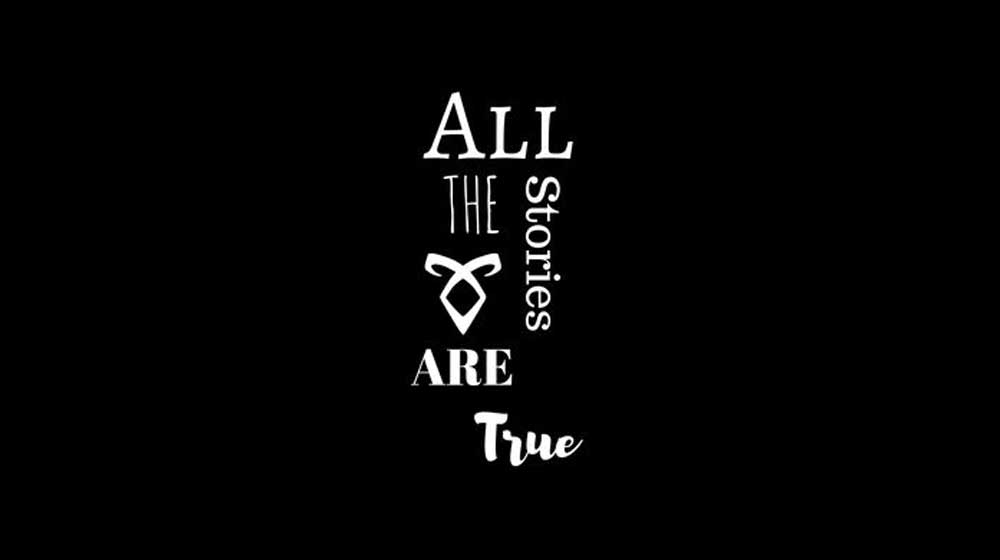
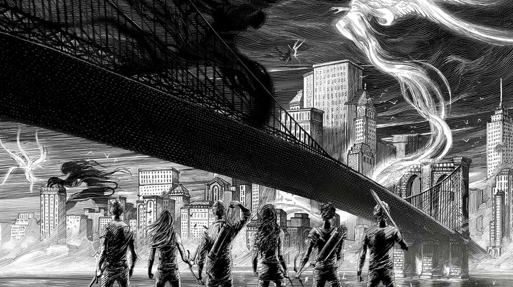
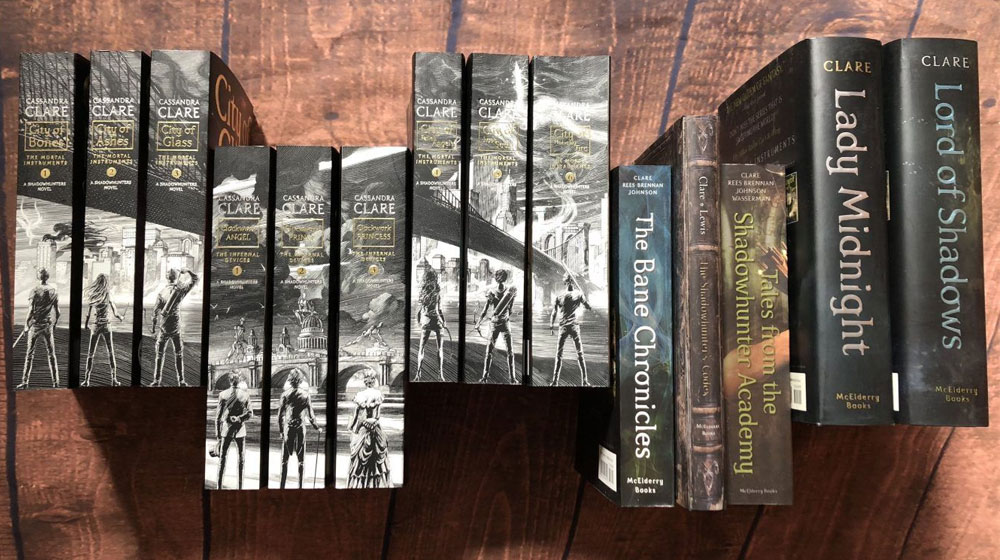
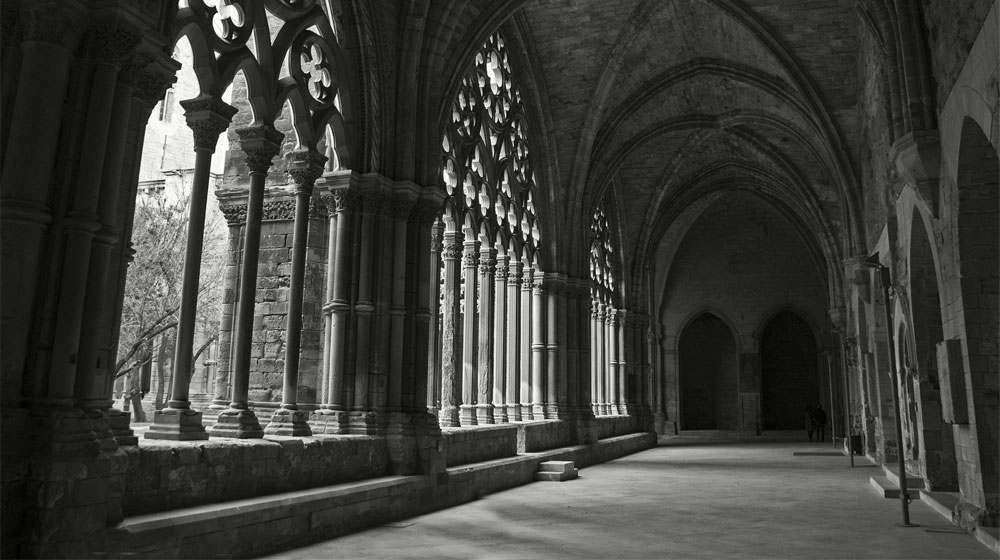

Las Crónicas de los Cazadores de Sombras es una serie de libros sobre un mundo oculto paralelo al nuestro donde existen los nefilim, guerreros mitad angel y mitad humanos, más conocidos como Cazadores de Sombras, ellos son los encargados de proteger a la tierra de los demonios, y mantener a todos los Subterráneos -vampiros, hombres lobos, hadas y brujos- bajo el orden de los Acuerdos y la Clave.
Cada saga tiene su propia ambientación, tiempo y protagonistas. Contiene una saga de seis libros, que es la que primero salió; dos trilogías ya públicadas por completo, una es una precuela y la otra una secuela; dos sin terminar; y una que se públicará más adelante que dará cierre a toda la crónica, además de libros complementarios, material extra, adaptaciones gráficas, en el cine y como serie.




Clary Fray es una adolescente neoyorkina que para su cumpleaños va al Club Pandemónium con su mejor amigo, pero nunca creyó que vería un asesinato. Mucho menos hecho por tres adolescentes con el cuerpo repleto de extraños tatuajes. Fue la primera vez que Clary se cruzó con el Mundo de las Sombras y con los nefilim, también fue la primera vez que se encontró con Jace Wayland. En tan solo 24 horas, Clary es arrastrada al peligroso mundo de Jace, es atacada por un demonio, y su madre desaparece. Pero, ¿por qué los demonios están interesados en una simple mundana como Clary? ¿Por qué de repente ha obtenido la Visión?
Tessa Gray es invitada por su hermano a vivir con él tras la muerte de su tía. Para ello, se dirige a Londres, donde es raptada por una organización secreta llamada el club Pandemonium, y rescatada por los cazadores de sombras. Pronto Tessa verá su corazón dividido entre Jem, cuya frágil belleza oculta un oscuro secreto, Y Will, cuya hiriente ironía y cambios de humor constantes la mantienen a distancia, mientras los tres intentan salvar el mundo de aquel llamado el Magíster.
Han pasado cinco años desde el final de Ciudad del Fuego Celestial (TMI 6). Los padres de la cazadora de sombras Emma Carstairs fueron asesinados y desde entonces su hija no ha dejado de buscar al culpable. Ella, junto con su parabatai (guerreros vinculados por un juramento que unen sus almas), Julian, empieza a investigar una demoníaca trama que se extiende por los lugares más glamurosos: desde Los Ángeles hasta las playas de Santa Mónica... En la trama se ve envuelto también un hechicero fascinante, Malcolm, que se empeña en recuperar a Anabel, su amada muerta. Además, Emma no puede evitar la poderosísima atracción que siente hacia su compañero, una relación que las leyes de los cazadores prohíben.
El padre de Cordelia Carstairs, una joven cazadora de sombras, es acusado de un terrible crimen, por lo que ella, su hermano y madre viajan al Londres eduardiano con la esperanza de evitar la ruina de la familia. Pronto, Cordelia se encuentra con sus amigos de la infancia James y Lucie Herondale -su futura parabatai- y se ve envuelta en su mundo de salones de baile brillantes, tareas secretas y salones sobrenaturales, donde el submundo convive. Todo el tiempo, ella debe ocultar su amor secreto por James, quien anhela el amor de otra. Sin embargo, la nueva vida de Cordelia se desmorona cuando una impactante serie de ataques demoníacos devastan Londres que durante años ha habido paz. Estos monstruos no se parecen en nada a los cazadores de sombras que han luchado antes: estos demonios caminan a la luz del día, golpean a los incautos con un veneno incurable y parecen imposibles de matar. Londres queda inmediatamente en cuarentena. Atrapados en la ciudad, Cordelia y sus amigos descubren que su propia conexión con un oscuro legado les ha otorgado poderes increíbles, y fuerzan una elección brutal que revelará el verdadero precio cruel de ser un héroe.
Descendencia
Las familias de los Cazadores de Sombras la mayoria tienen siglos de existencia, en la historia existen los Herondale, como Will Herondale portagonista de The Infernal Devices ambientada en un Londres victoriano (1800s) o Jace Herondale, su descendiente neuyorkino de los 2000s que protagoniza The Mortal Instruments; y así se repiten las familias siendo unas de las más importantes los Herondale, los Lightwood, los Carstairs, los Fairchild y los Blackthorn, entre otras más que se reparten en todo el universo de Cazadores de Sombras, desde The Mortal Instruments, The Infernal Devicies, The Dark Artificies, The Last Hours, y las demás historias.
“Negro para cazar en la noche para la muerte y el luto, el color blanco oro para la esposa en su vestido de novia y rojo para invocar el encantamiento. Seda blanca cuando nuestros cuerpos queman estandartes azules cuando lo perdido vuelve llama para el nacimiento de un nefilim y para limpiar nuestros pecados. Gris para el conocimiento mejor oculto hueso para los que no envejecen. Luces de azafrán llevan a la victoria verde para curara los corazones rotos. Plata para las torres de los demonios y bronce para invocar a los poderes malignos.”